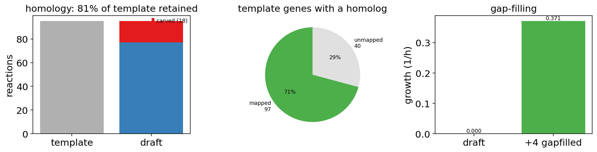
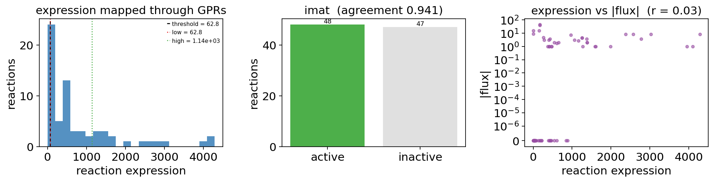
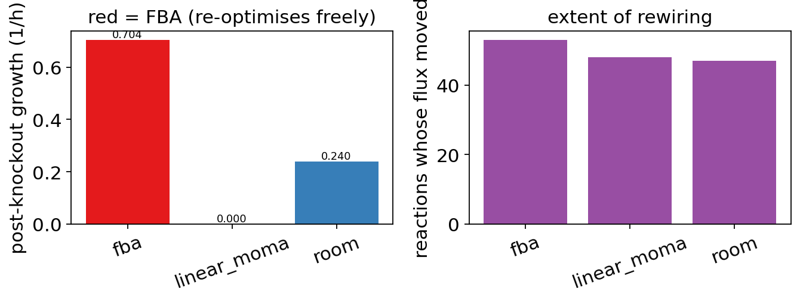
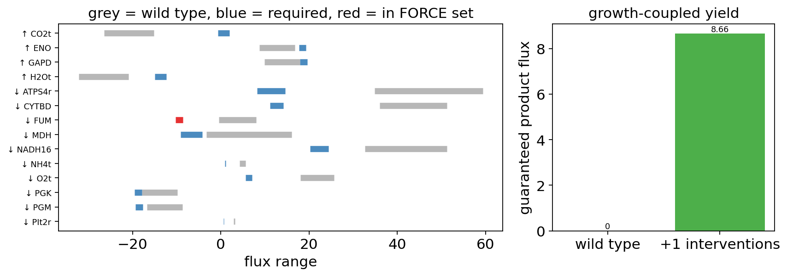
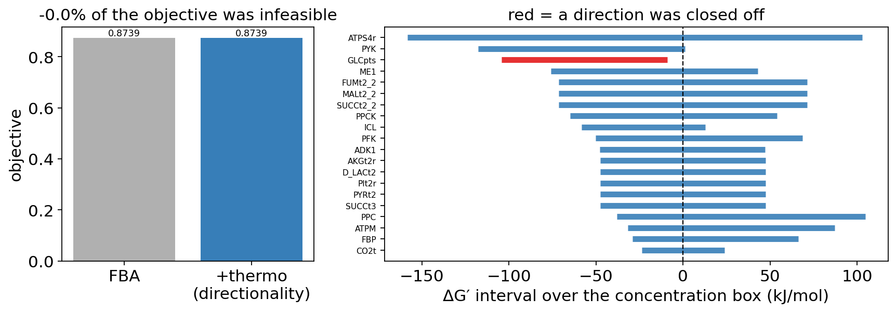
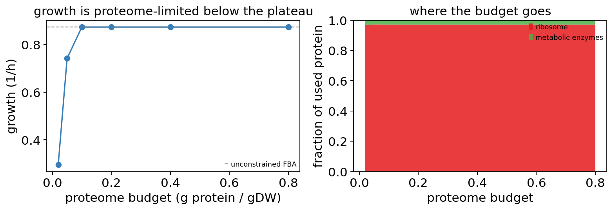
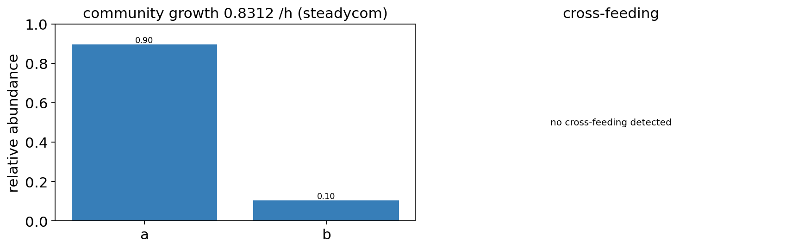
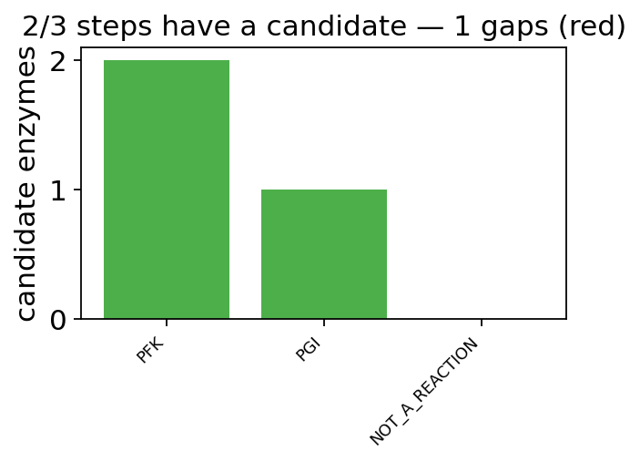

Building a strain from scratch — ov.synbio layer A end to end#
The previous synbio tutorials all start from a model that already exists. This one starts from the situation industrial work actually begins in: an organism BiGG has no model for, and a target it does not currently make.
The chain is: reconstruct → gap-fill → validate → constrain with measured omics → predict knockouts honestly → derive the interventions → check thermodynamics and the proteome budget → and finally hand the pathway over to layer B by asking which enzyme runs each step.
Every input here is real: BiGG’s E. coli core model, a published E. coli protein-abundance table, and the model’s own gene-protein-reaction rules.
0 — Setup#
Weights and cached models are relocatable — on a shared cluster you do not want either landing in $HOME.
import os
os.environ.setdefault('OMICOS_SYNBIO_GEM_DIR', os.path.expanduser('~/.omicverse/synbio_gems'))
import omicverse as ov
ov.plot_set()
print('omicverse', ov.__version__)
🔬 Starting plot initialization...
🧬 Detecting GPU devices…
✅ NVIDIA CUDA GPUs detected: 1
• [CUDA 0] NVIDIA H100 80GB HBM3
Memory: 79.1 GB | Compute: 9.0
____ _ _ __
/ __ \____ ___ (_)___| | / /__ _____________
/ / / / __ `__ \/ / ___/ | / / _ \/ ___/ ___/ _ \
/ /_/ / / / / / / / /__ | |/ / __/ / (__ ) __/
\____/_/ /_/ /_/_/\___/ |___/\___/_/ /____/\___/
🔖 Version: 2.2.1rc1 📚 Tutorials: https://omicverse.readthedocs.io/
✅ plot_set complete.
omicverse 2.2.1rc1
1 — Reconstruct a model for an organism that has none#
load_gem can only read a model somebody already built. reconstruct_gem builds one.
The default method='homology' transfers a template GEM through reciprocal best hits: for every template reaction it asks whether the target organism still has the genes the reaction’s GPR requires, and carves away the ones it does not. method='carveme' and method='modelseed' drive the real external reconstructors when they are installed.
To make the mechanism visible without a proteome download, we pass proteome=None and hand it the gene mapping directly — this is the same input the alignment step produces. proteome=None is required here: when a path is given it must point at a real file even though gene_map skips the alignment, so that a reconstruction can always be traced back to the sequences it came from. Here the “new strain” is one that has lost 40 of the template’s genes.
template = ov.synbio.load_gem('textbook')
template_genes = sorted(g.id for g in template.genes)
gene_map = {f'strainX_{g}': g for g in template_genes[:-40]}
print(f'{len(template.reactions)} reactions, {len(template_genes)} genes in the template')
95 reactions, 137 genes in the template
draft = ov.synbio.reconstruct_gem(None, template=template, gene_map=gene_map)
print(draft)
print('carved away:', len(draft.dropped_reactions), 'reactions')
ReconstructionReport(homology, template='e_coli_core', 77/95 rxns (81%), 110 genes, growth=0.0000)
carved away: 18 reactions
coverage is the fraction of the template retained, and grows is the question that matters. A carved draft usually cannot grow — losing consecutive steps of a pathway breaks it — which is exactly what gap-filling is for.
print('coverage:', f'{draft.coverage:.0%}')
print('grows:', draft.grows, '| growth =', round(draft.growth, 4))
coverage: 81%
grows: False | growth = 0.0
2 — Gap-filling#
Gap-filling pulls the smallest set of reactions from a universal database that restores flux through the objective.
method='cobra' is COBRApy’s MILP and finds a genuinely minimal set. method='lp' is an L1 relaxation: add every candidate, require growth, minimise the total flux they carry, then prune. It needs only an LP solver, and — importantly — it handles gaps that need several reactions at once, which the obvious “add whichever single reaction helps most, repeat” cannot, because no single addition moves growth off zero.
universe = ov.synbio.universal_reactions([template])
filled = ov.synbio.gapfill_model(draft.model, universe=universe, method='lp',
growth_threshold=0.05)
print(filled)
print('added:', filled.added)
GapfillReport(lp, +4 rxns, growth 0.0000 -> 0.3711)
added: ['PPC', 'O2t', 'PGI', 'TPI']
3 — Validating the draft#
Before trusting a reconstruction: does mass and charge balance, are there dead-end metabolites, and — the one that catches gap-filling artefacts — can the model make ATP with every uptake shut off? A positive energy_leak means a thermodynamically impossible cycle got added.
qc = ov.synbio.validate_gem(filled.model, check_blocked=False)
print('grows:', qc['grows'], '| unbalanced reactions:', len(qc['unbalanced']))
print('ATP from nothing (energy leak):', qc['energy_leak'])
grows: True | unbalanced reactions: 0
ATP from nothing (energy leak): 0.0
ov.synbio.plot_reconstruction(draft, gapfill=filled)
(<Figure size 1008x272 with 3 Axes>,
[<Axes: title={'center': 'homology: 81% of template retained'}, ylabel='reactions'>,
<Axes: title={'center': 'template genes with a homolog'}>,
<Axes: title={'center': 'gap-filling'}, ylabel='growth (1/h)'>])
{kind=link}

4 — The Learn → Design bridge: constraining the model with measured omics#
This is the join that did not exist. ov.bulk / ov.single produce expression; ov.synbio holds a genome-scale model; nothing connected them. The GEM answered what could this organism do, the omics answered what is it doing, and neither answered the useful question — what can these cells, in this state, do.
fetch_ecoli_abundance returns a real published E. coli protein-abundance table keyed by b-number, which is the identifier BiGG genes already use — so it drops in without an id-mapping step, which is where most omics-to-GEM attempts actually fail.
abundance = ov.synbio.fetch_ecoli_abundance()
rxn_expr = ov.synbio.reaction_expression(abundance, template)
measured = sum(v is not None for v in rxn_expr.values())
print(f'{len(abundance)} genes measured; {measured}/{len(rxn_expr)} reactions got a value')
4097 genes measured; 66/95 reactions got a value
Genes are folded onto reactions through the GPR with the standard convention: and takes the minimum (a complex runs no faster than its scarcest subunit) and or takes the maximum (isozymes are alternatives). A reaction nobody measured stays None, which is deliberately distinct from measuring zero.
Four published methods are available. GIMME and RIPTiDe are pure LP; iMAT and tINIT are MILP and need no objective function at all — which makes iMAT the one to reach for when you do not know what the cells are optimising, i.e. most of the time outside exponential-phase batch culture.
gimme = ov.synbio.contextualize_gem(abundance, template, method='gimme')
riptide = ov.synbio.contextualize_gem(abundance, template, method='riptide')
imat = ov.synbio.contextualize_gem(abundance, template, method='imat', time_limit=30)
for r in (gimme, riptide, imat):
print(r)
ContextResult(gimme, 50 active rxns, objective=0.8739, inconsistency=5546.288)
ContextResult(riptide, 52 active rxns, objective=0.8739)
ContextResult(imat, 48 active rxns, objective=0.8739, agreement=0.941)
objective_value means the same thing for every method — the biological objective of the contextualised model. The method’s own fit lives in inconsistency (GIMME: how much poorly-supported flux the required function still forced) or agreement (iMAT: the fraction of expression calls the flux distribution satisfied).
ov.synbio.plot_contextualization(imat)
(<Figure size 1008x272 with 3 Axes>,
[<Axes: title={'center': 'expression mapped through GPRs'}, xlabel='reaction expression', ylabel='reactions'>,
<Axes: title={'center': 'imat (agreement 0.941)'}, ylabel='reactions'>,
<Axes: title={'center': 'expression vs |flux| (r = 0.03)'}, xlabel='reaction expression', ylabel='|flux|'>])
{kind=link}

df = gimme.to_frame().sort_values('expression', ascending=False)
print(df.head(8))
expression flux active
reaction
GAPD 4285.0 17.909169 True
MDH 4096.0 4.719406 True
ICL 3954.0 0.000000 False
PGK 3022.0 -17.909169 True
TPI 2772.0 9.217639 True
ENO 2567.0 16.732521 True
PGM 2376.0 -16.732521 True
ICDHyr 1988.0 5.567993 True
5 — Knockouts, honestly#
Plain FBA answers given this deletion, what is the best the network could possibly do. A cell that just lost a gene is not that cell — it still carries the wild-type proteome and lands on the nearest feasible flux state, not the globally optimal one.
The difference is not subtle. On this model, deleting PFK:
comparison = ov.synbio.compare_knockout_methods(template, ['PFK'])
print(comparison[['growth', 'growth_ratio', 'n_changed']])
growth growth_ratio n_changed
method
fba 0.704037 0.805607 53
linear_moma 0.000000 0.000000 48
room 0.239732 0.274317 47
FBA calls it a viable strain at 81% of wild-type growth. MOMA calls it dead. FBA does not merely overestimate the knockout — it inverts the call, and a knockout screen run on FBA alone will keep targets that are actually lethal.
The methods agree where they should: ENO is genuinely essential and all three report zero, while PGI is dispensable and all three keep it alive — so MOMA is not simply pessimistic.
for reaction in ('ENO', 'PGI'):
row = ov.synbio.compare_knockout_methods(template, [reaction])['growth']
print(reaction, dict(row.round(4)))
ENO {'fba': np.float64(0.0), 'linear_moma': np.float64(0.0), 'room': np.float64(0.0)}
PGI {'fba': np.float64(0.8632), 'linear_moma': np.float64(0.8426), 'room': np.float64(0.7465)}
ov.synbio.plot_knockout_response(comparison)
(<Figure size 688x272 with 2 Axes>,
[<Axes: title={'center': 'red = FBA (re-optimises freely)'}, ylabel='post-knockout growth (1/h)'>,
<Axes: title={'center': 'extent of rewiring'}, ylabel='reactions whose flux moved'>])
{kind=link}

compare_knockout_methods is the summary; knockout_flux is the single run behind each row, and it keeps the method’s own objective separate from growth. Linear MOMA’s objective_value is a flux deviation (~71 here), not a growth rate — reading one as the other silently mixes units, so they live in different fields.
detail = ov.synbio.knockout_flux(template, ['PGI'], method='linear_moma')
print(detail)
print('method objective:', round(detail.method_objective, 2), '=', detail.method_objective_meaning)
PerturbationResult(linear_moma, ko=['PGI'], growth=0.8426 (96% of wt), 47 fluxes moved)
method objective: 70.96 = total absolute flux deviation from wild type
6 — Which fluxes must change: OptForce#
strain_design already covers OptKnock, RobustKnock and minimal cut sets. OptForce asks a different question: comparing the flux ranges the wild type can occupy against the ranges an over-producing strain must occupy, which reactions cannot stay where they are?
The MUST sets are derived, not guessed — a reaction is in them exactly when the two intervals do not overlap. The FORCE set on top is an explicit search, and force_is_exact says so.
force = ov.synbio.optforce(template, 'EX_succ_e', target_fraction=0.8,
max_interventions=3)
print(force)
print('FORCE set:', force.force)
OptForceResult(target='EX_succ_e', MUST↑4 MUST↓10, FORCE=1, guaranteed=8.664)
FORCE set: [down(FUM: [-0.513,8.05] -> [-10.3,-8.66])]
On this model the search picks reversing fumarase, which is the textbook route to succinate over-production in E. coli, and guaranteed product goes from 0 to 8.7.
ov.synbio.plot_optforce(force)
(<Figure size 880x320 with 2 Axes>,
[<Axes: title={'center': 'grey = wild type, blue = required, red = in FORCE set'}, xlabel='flux range'>,
<Axes: title={'center': 'growth-coupled yield'}, ylabel='guaranteed product flux'>])
{kind=link}

7 — Thermodynamics as a constraint, not a footnote#
reaction_dg and max_min_driving_force compute ΔG beside FBA. thermo_fba puts it inside.
method='directionality' is pure LP: derive each reaction’s ΔG′ interval over the allowed concentration box and close off any direction the interval forbids. method='tmfa' is the full Henry-2007 MILP, where directions and concentrations are chosen together — which is what removes thermodynamically infeasible internal loops that the per-reaction test cannot see.
thermo = ov.synbio.thermo_fba(template, method='directionality')
print(thermo)
print('directions closed off:', thermo.blocked_forward + thermo.blocked_reverse)
ThermoFBAResult(directionality, objective=0.8739 vs 0.8739 unconstrained (-0.0% cost), 1 reactions constrained)
directions closed off: ['GLCpts']
ov.synbio.plot_thermo_fba(thermo)
(<Figure size 880x320 with 2 Axes>,
[<Axes: title={'center': '-0.0% of the objective was infeasible'}, ylabel='objective'>,
<Axes: title={'center': 'red = a direction was closed off'}, xlabel='ΔG′ interval over the concentration box (kJ/mol)'>])
{kind=link}

8 — Paying for the proteome#
ec_model charges reactions against a shared enzyme pool. RBA goes one step further and makes the ribosome a constrained resource too, so growth has to pay for synthesising the enzymes it uses. That is the mechanism behind overflow metabolism: a cell excretes acetate at high glucose not because it cannot oxidise it, but because respiration costs more protein per ATP than fermentation does.
loose = ov.synbio.rba(template, total_protein=0.9)
tight = ov.synbio.rba(template, total_protein=0.05)
print('budget 0.9 :', loose)
print('budget 0.05:', tight)
budget 0.9 : RBAResult(growth=0.8739 vs 0.8739 unconstrained, ribosome 97.1% of proteome)
budget 0.05: RBAResult(growth=0.7421 vs 0.8739 unconstrained, ribosome 97.2% of proteome)
ov.synbio.plot_rba(template, budgets=[0.02, 0.05, 0.1, 0.2, 0.4, 0.8])
(<Figure size 800x288 with 2 Axes>,
[<Axes: title={'center': 'growth is proteome-limited below the plateau'}, xlabel='proteome budget (g protein / gDW)', ylabel='growth (1/h)'>,
<Axes: title={'center': 'where the budget goes'}, xlabel='proteome budget', ylabel='fraction of used protein'>])
{kind=link}

9 — More than one organism in the flask#
community_model merges GEMs into one compartmentalised model with a shared medium, so cross-feeding is a computed flux rather than an assumption. The uptake bounds of the shared exchanges inherit the tightest member’s — with an unlimited medium the members never compete, and the abundance question becomes vacuous.
steadycom then finds the composition at which every member grows at the same rate, which is the only self-consistent steady state for a co-culture.
community = ov.synbio.community_model({'a': template, 'b': template.copy()})
result = ov.synbio.steadycom(community)
print(result)
print('abundances:', {k: round(v, 3) for k, v in result.abundances.items()})
CommunityResult(steadycom, 2 members, community growth=0.8312, 0 cross-feeding links)
abundances: {'a': 0.895, 'b': 0.105}
ov.synbio.plot_community(result)
(<Figure size 880x288 with 2 Axes>,
[<Axes: title={'center': 'community growth 0.8312 /h (steadycom)'}, ylabel='relative abundance'>,
<Axes: title={'center': 'cross-feeding'}>])
{kind=link}

Two identical members have no determined ratio — with the abundances summing to one, every split is feasible — and the result says so rather than presenting an arbitrary vertex as a prediction.
print('composition is unique:', result.abundance_is_unique)
for note in result.notes:
print(note)
composition is unique: False
丰度分布不唯一:在同一群落生长率下存在多种可行组成(成员可互换或代谢冗余时必然如此)。这里给出的是其中一个顶点,不要当作预测的组成。
10 — Handing the pathway to layer B#
pathway_search and retro_biosynthesis produce chemical transformations. Somebody then had to decide, by hand, which enzyme performs each step. match_enzymes closes that joint: give it a reaction and it returns ranked candidates with sequences, so the next call is a layer-B function rather than a literature search.
Sources are a local FASTA, the model’s own genes, or UniProt (network opt-in). Nothing is bundled — an enzyme database shipped inside an analysis package is stale the day it is written.
match = ov.synbio.match_enzymes('PFK', model=template)
print(match)
print('candidates:', [c.identifier for c in match.candidates])
EnzymeMatch('PFK', EC='', 2 candidates, 0 with sequences)
candidates: ['b1723', 'b3916']
For a whole route, match_pathway_enzymes runs the same thing per step and reports which steps have no candidate — those gaps are the engineering risk, and they are what a coverage number hides.
route = ov.synbio.match_pathway_enzymes(['PFK', 'PGI', 'NOT_A_REACTION'], model=template)
print('coverage:', f"{route['coverage']:.0%}", '| gaps:', route['gaps'])
coverage: 67% | gaps: ['NOT_A_REACTION']
ov.synbio.plot_enzyme_match(route)
(<Figure size 352x272 with 1 Axes>,
<Axes: title={'center': '2/3 steps have a candidate — 1 gaps (red)'}, ylabel='candidate enzymes'>)
{kind=link}

Two further layer-A functions are reachable but not exercised here because each needs a dependency this notebook does not assume: ov.synbio.micom_grow solves the same community with MICOM’s cooperative-tradeoff objective (a different modelling assumption from SteadyCom’s strict equal-growth — running both and comparing is the point), and ov.synbio.me_model loads a COBRAme metabolism-and-expression reconstruction, which writes transcription and translation down as explicit reactions rather than as the single aggregate budget rba imposes.
From here the layer-B chain is available on each candidate — enzyme_kcat, enzyme_km, predict_solubility, predict_expression_level — and a better k_cat feeds straight back into ec_model and re-solves the yield. That round trip is the subject of the next tutorial.